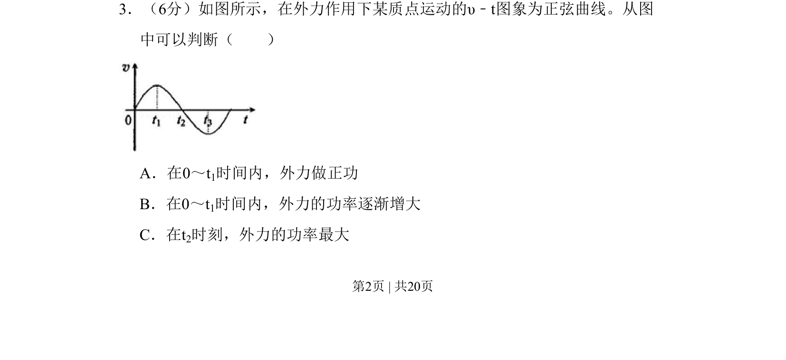
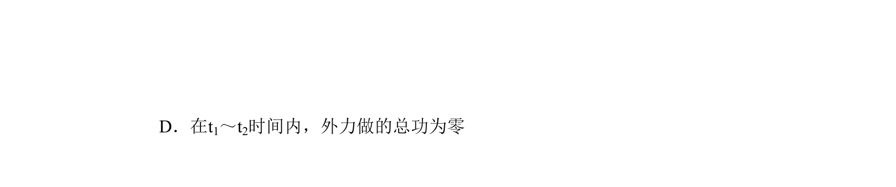
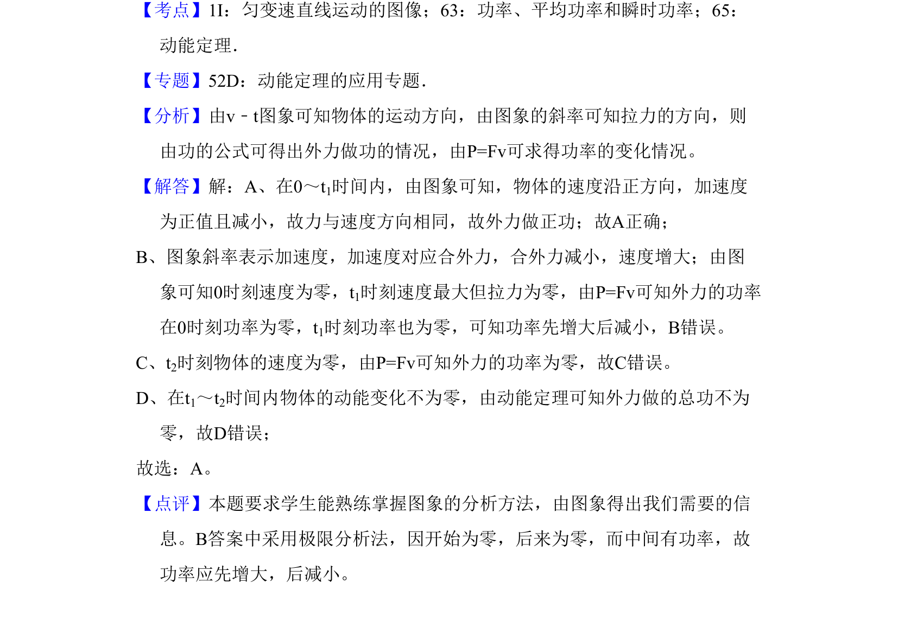

考点：v-t图像 简谐运动 功 功率


根据质点做简谐运动的v-t图象，判断外力做功的正负及功率大小变化情况。

📄 原 PDF 第 2 页：
素材/真题/吉林/2008-2024·（吉林）物理高考真题/2010年高考物理试卷（新课标Ⅰ）（解析卷）.pdf
3．（6分）如图所示，在外力作用下某质点运动的υ﹣t图象为正弦曲线。从图 中可以判断（ ） A．在0～t1时间内，外力做正功 B．在0～t1时间内，外力的功率逐渐增大 C．在t2时刻，外力的功率最大